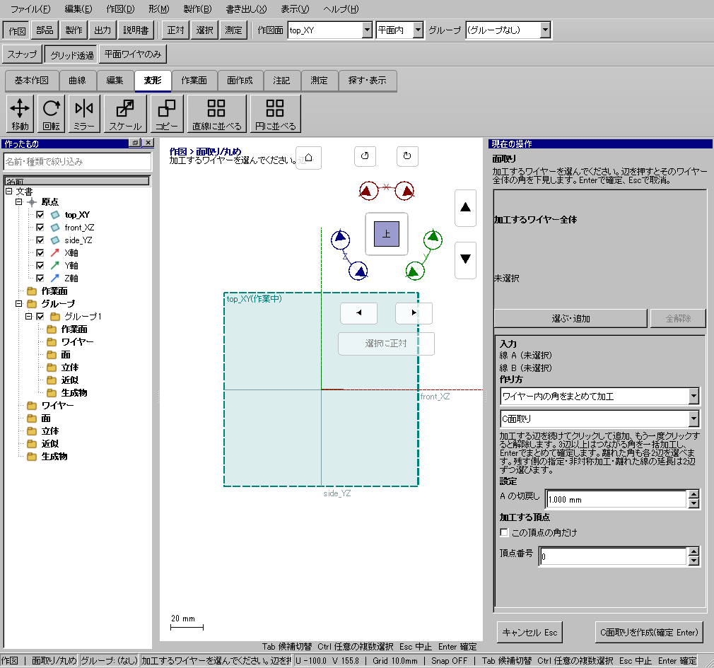
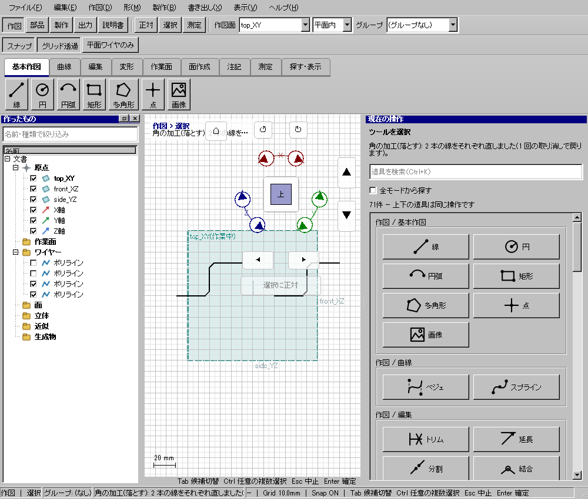
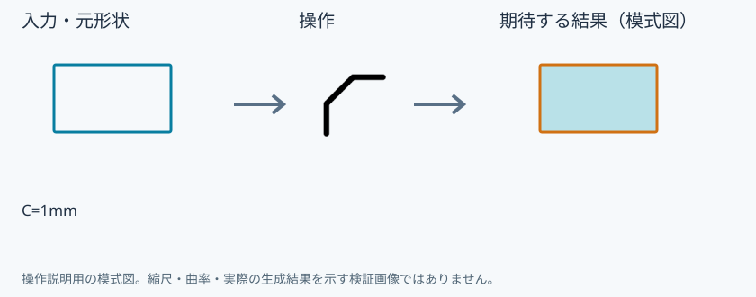
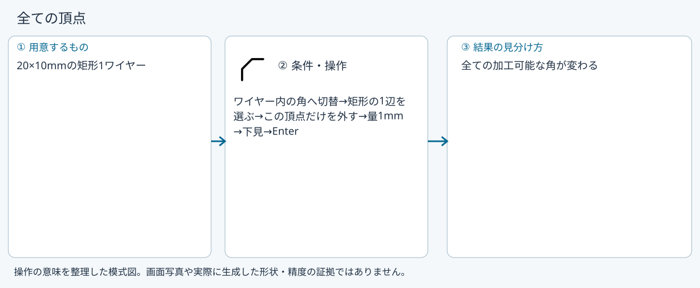
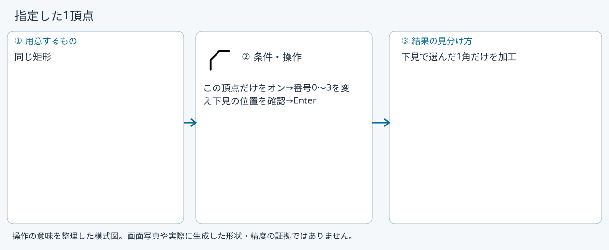
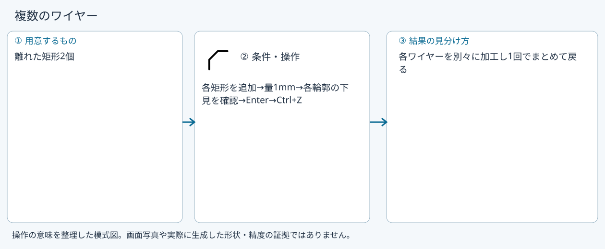

1つの矩形の角をC1で落とす
使う機能：角の加工(落とす)
1ワイヤー内の頂点を加工します。2本を別々に選ぶC面取りとは入力が異なり、頂点番号で加工箇所を指定できます。
指定した角が斜めの直線に置き換わる。2本を別選択する面取りと入力が異なる。
1 準備 — 元の図形から作る
20×10mmの矩形を1ワイヤーで作る。
まだ用意できていなければ、次の手順を先に行ってください。既にモデルがある場合も、例の座標・大きさ・面の向きを自分のモデルへ読み替えます。
- 幅20・高さ10mmの閉じた矩形を作る — 図形の作成から順に練習できます。
- 線・面・部品を取り違えずに選ぶ — 図形の作成から順に練習できます。
練習前にKCD2を別名保存します。数値の長さはmm、角度は度です。平面内のu/vと世界XYZを区別します。
2 使う道具を開く — 押す場所
- Ctrl+K → 角の加工(落とす)を検索、または面取り／丸めの対象モードをワイヤー内の角へ切替
別の入口：Ctrl+K → 角の加工(落とす)を検索 → 候補の用途を確認して開きます。別モードなら「全モードから探す」をオンにします。


この実画面は既存操作試験の一場面で、下の数値例の完成画像とは限りません。
3 操作手順 — 一つずつ進める
閉じた輪郭を準備する
top_XYで20×10mmの矩形を作ります。新しい練習文書で試し、元モデルを上書きしません。
画面で確認：4辺の矩形が1ワイヤーとして存在します。
ワイヤー内の角を選ぶ
Ctrl+Kで角の加工を探してC面取りの入口を開きます。対象モードを「ワイヤー内の角をまとめて加工」にします。
画面で確認：2辺を別々に選ぶモードと区別します。
対象を登録する
3Dで矩形のどれか1辺を押します。または左一覧で矩形全体を選びます。
画面で確認：このモードでは1辺のクリックからもワイヤー全体の角を加工する下見が出ます。
量と頂点を指定する
量または半径を1mmにします。全角なら「この頂点の角だけ」を外します。1角ならオンにして頂点番号を変え、下見で位置を照合します。
画面で確認：頂点チェックと番号を変えると下見も変わります。番号は0始まりです。
下見を見て確定する
下端の作成ボタンまたはEnterを押します。大きすぎる量で失敗したら値を下げ、エラーを確認します。
画面で確認：確定前は文書を変更しません。完成後はCtrl+Zで加工前へ戻り、Ctrl+Yでやり直せます。
続けるか取り消す
Escは現在の入力を外して道具と設定を維持します。別の矩形を加工するならそのまま追加します。終えるなら選択Vです。
画面で確認：複数ワイヤーも各ワイヤーを別々に加工します。
4 設定する欄と数値
ボタン名・欄名と、今回使う値を対応させてください。項目が出ていない場合は作り方・モードが合っているか確認し、ペイン内をスクロールします。
| 見る欄・役割 | この例の設定と意味 |
|---|---|
| この頂点の角だけ | オン |
| 頂点番号 | 0始まり |
| 切戻し | 1mm |
選択の確認：役割欄の名前と3Dの強調を照合します。重なって拾いにくい時はTabで候補を替えます。全体を使う例では左一覧の要素名を選び、3Dの1辺選択と区別します。

5 確定して結果を確認
対象モードを「ワイヤー内の角をまとめて加工」にし、種類・数値・この頂点だけ・番号を設定します。3Dで輪郭の1辺を選び、下見を見て下端の作成ボタンまたはEnterで確定します。
指定した角が斜めの直線に置き換わる。2本を別選択する面取りと入力が異なる。
形を作る操作では、元と結果の名前を分けて一覧で確認し、必要に応じて元を一時非表示にします。表示だけの機能では形状や要素数を変えることが目的ではありません。
6 取消・やり直し・保存
Escは入力を解除し、道具と設定を維持します。加工後の結果が違う場合はCtrl+Zで戻し、番号や条件を直します。
モデルの編集正本はKCD2、説明書の編集正本はKCIです。外部へ出力するだけの機能では、出力ファイルと編集元を両方残してください。
進めない場合 — 症状から戻る場所を探す
| 起きていること | 確認して直す場所 |
|---|---|
| 全部の角が変わる | この頂点だけのチェックを確認 |
| 別の角が変わる | 実行後の結果と頂点番号を照合し、違えばUndo |
この機能の入力条件：ワイヤーを1つ以上選んでください。
計算中は処理表示を見ます。失敗が出たら、対象・入力条件を変えずに何度も押すのでなく、案内にある対象と条件を確認します。
別の方式・条件で使う
全ての頂点
まず主手順で入力の役割を確認し、この例の値と操作へ置き換えます。
この例の準備：20×10mmの矩形1ワイヤー
矩形の1辺を押すだけでもワイヤー全体が加工対象になります。頂点限定をオフにして下見の全角を確認します。辺どうしの角モードで1辺だけを選ぶ操作とは違います。
- ワイヤー内の角へ切替
- 矩形の1辺を選ぶ
- この頂点だけを外す
- 量1mm
- 下見
- Enter
結果の見分け方：全ての加工可能な角が変わる

指定した1頂点
まず主手順で入力の役割を確認し、この例の値と操作へ置き換えます。
この例の準備：同じ矩形
番号は0始まりです。画面の見た目だけから番号を推測せず、番号を変えた下見で加工箇所を照合します。チェックや番号の変更だけでは確定しません。
- この頂点だけをオン
- 番号0〜3を変え下見の位置を確認
- Enter
結果の見分け方：下見で選んだ1角だけを加工

複数のワイヤー
まず主手順で入力の役割を確認し、この例の値と操作へ置き換えます。
この例の準備：離れた矩形2個
複数輪郭をつないだ1個の鎖に変える処理ではありません。各ワイヤーを別々に計算し、どれか作れない場合は部分的な確定にしません。1回のUndoでまとめて戻します。
- 各矩形を追加
- 量1mm
- 各輪郭の下見を確認
- Enter
- Ctrl+Z
結果の見分け方：各ワイヤーを別々に加工し1回でまとめて戻る

参考画面の出典と確認範囲
試験名：角の加工は何本選んでも線ごとに作り1回で戻る。試験全体の結果：passed。画像はコマンド呼出し直後で、入力待ち・下見の場合もあります。各段階の完成証拠ではありません。